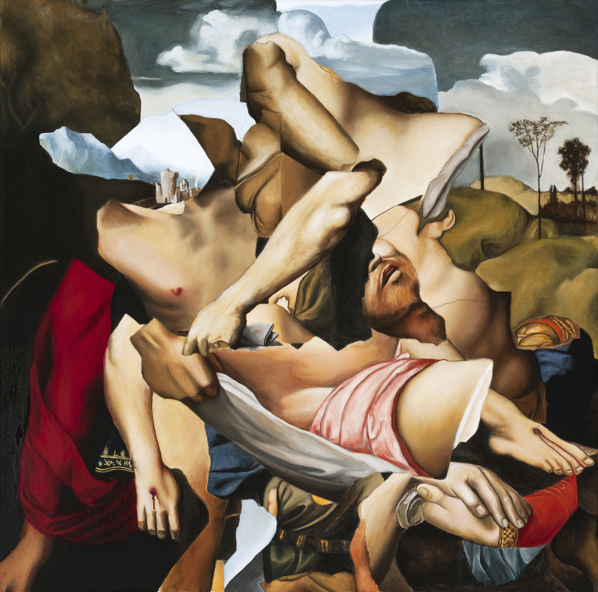

The Deposition
Kieran Valde
Oil on Canvas
20 x 20 in
About the Work :: “I am fascinated by the history of how objects have been collected and replicated, as well as how canons were established. The history of Western art is white, elite, male, and Eurocentric. It has been centred on the mythos of the artist rather than on the artworks themselves. My paintings are important records of looking at these images. I make ironic reproductions that have their own indelible authenticity. They are representations of canonical paintings from art history– mediated images I have accessed through the proliferation of photography and the internet. Creating these paintings is a way for me to connect with the history of image making. My process of transforming Baroque and Renaissance paintings, historically intended to achieve a sense of awe, is partly satirical but also reverential. By studying their technique and then deviating from the reference, my paintings are exercises in empathy. My works are more distorted and chaotic than the versions hanging in museums. It is my effort at conversing with their power.”